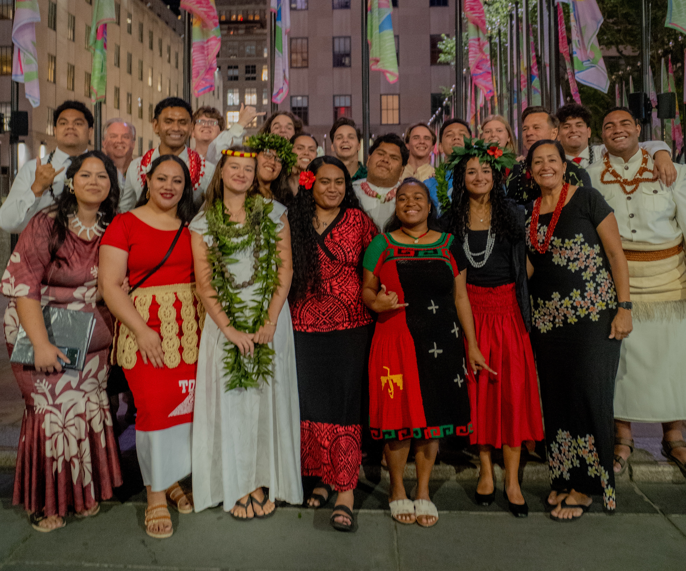

Carnegie Hall Experience
A Night at Carnegie Hall in New York City is one of the best experiences I have had in my life. Carnegie Hall is the place that every musician dreams to perform at, and I am so blessed to be here and to represent the university, my country, and to sing for those people who experienced tragedy.
Filipinos in the Choir: It is such a privilege to be a part of this large choir group, especially to represent our country and share our requiem. One of the pieces we sang was for the people of Tacloban City, Philippines.
Polynesians in the choir are humble and brings harmony in the whole choir, their voices echos throughout the entire hall during that night.
My Gallery

